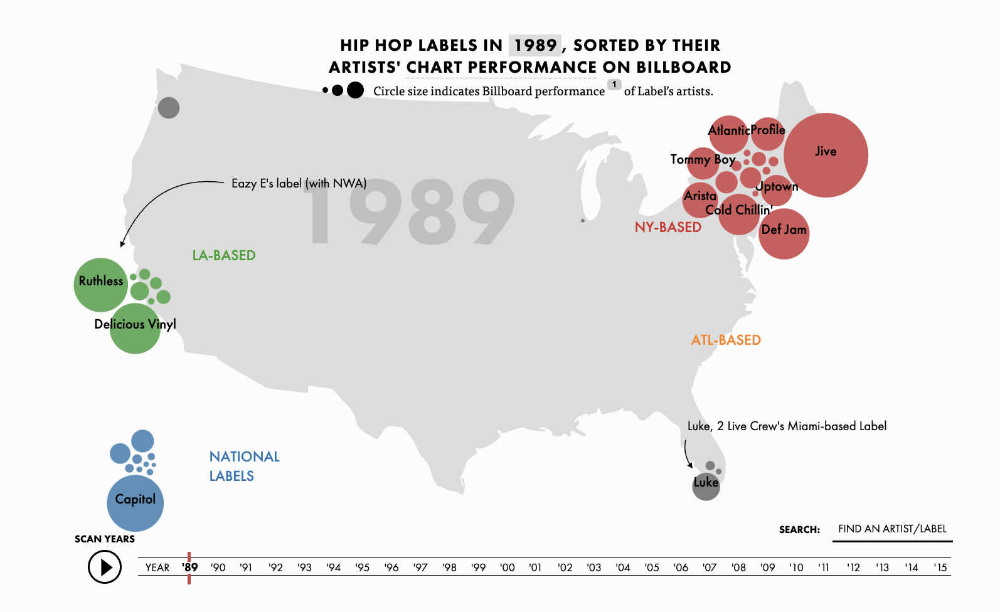

Let's look at just 1989, the launch of Billboard's "Hot Rap Singles" chart:
In 1989, regional independent labels dominated with superstar signings: Young MC and the Phanecyde are signed to Delicious Vinyl. Biz Markie (Just a Friend), Big Daddy Kane (Smooth Operator), and Markey Marl are all on Cold Chillin', Ruthless, Eary E's label, has N.W.A., and The D.O.C. on its roster. Jive is crushing it with a roster that includes Boogie Down Productions, DJ Jazzy Jeff and the Fresh Prince, and Too Short. And Tommy Boy presciently released both De La Soul and Queen Latifah's first albums.